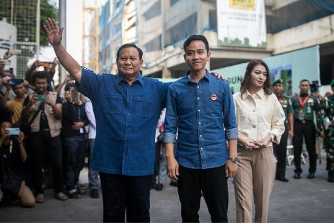

HOME
PROFIL
GALERI
VISI & MISI
GABUNG
PRABOWO
SUBIANTO
Reformasi Nyata: Prabowo dan Komitmen untuk
Masa Depan yang Lebih Baik
Prabowo-Gibran
Usung 8 Misi
'Asta Cita'
di Pilpres 2024
Read More

PIDATO POLITIK PRABOWO SUBIANTO DI ACARA DEKLARASI
Sebarkan!
account_circle
Kenali Lebih Dekat:
Profil Prabowo,
Pemimpin dengan Integritas
explore
Visi dan Misi Prabowo untuk Kemajuan Bangsa